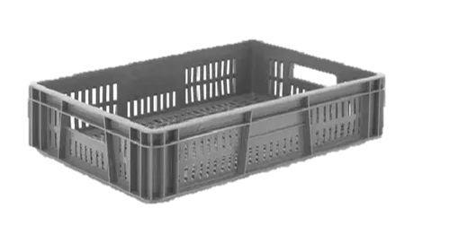

Selección de productos a empacar
Se comenzó con una lista inicial de 5 productos que resultaran atractivos para el proyecto. Los productos fueron los siguientes:
- Aguacate hass
- Limón
- Tomate cherry
- Champiñón
- Fresa
Despues de seguir las recomendaciones del profesor Ricardo y analizando los productos, se decidió trabajar con los aguacate hass y limón.
Las frutas seleccionadas presentan un flujo de trabajo similar en su procesamiento. La diferencia está en que para los limones hay una etapa de encerado justo antes de su empacado, mientras que para los aguacates esta no es requerida.
Se optó por un empaque en canastillas de 60x40x13 cm (enlace). En ellas, dadas las dimensiones de los frutos, caben 40 aguacates organizados en un arreglo de 8x5, equivalente a un peso de hasta 12 kg. En cuanto a los limones, estos caben organizados en dos niveles completando un peso de hasta 8 kg.
Imagen de la canastilla:
Las canastillas llenas se apilarían en palets ordenadas en 2x2 hasta completar 10 niveles. El tipo de palet que se utilizaría para la aplicación sería un palet europeo, que tiene unas dimensiones de 120x80x14.4 cm.